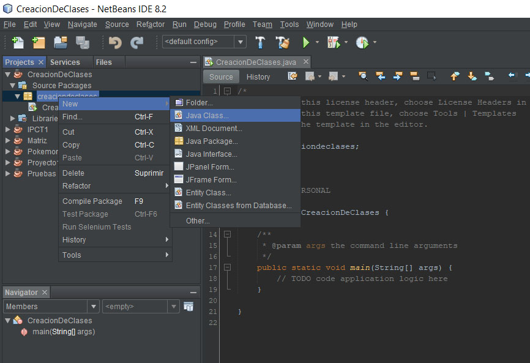
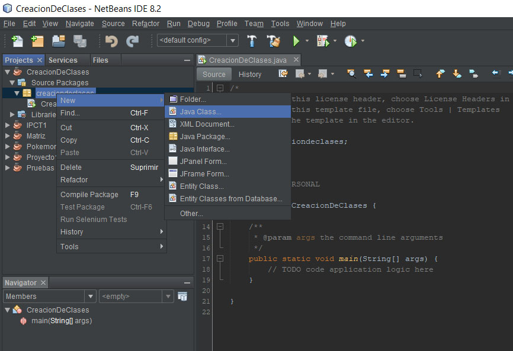
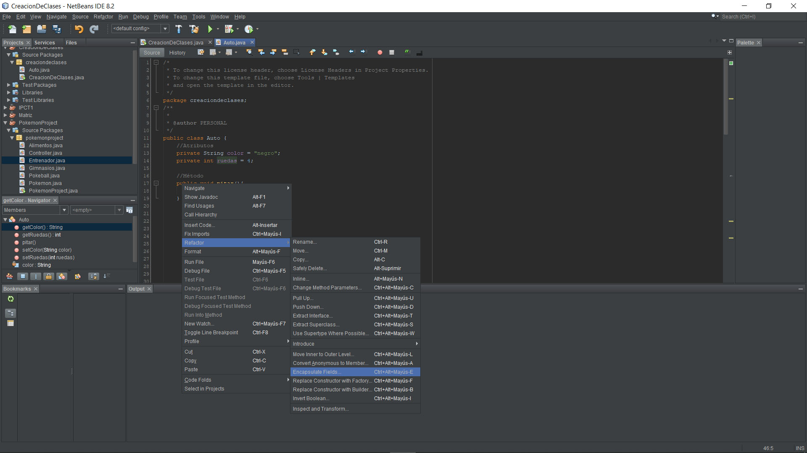

Para crear la clase simplemente le damos click derecho al icono del paquete, luego a new y finalmente a la opción JavaClass
Posteriormente tendremos que asignarle el nombre a la clase, dado que se esta usando POO en este caso lo llamaré Auto

CREACION E INSTANCIACIÓN DE CLASES
Para crear la clase simplemente le damos click derecho al icono del paquete, luego a new y finalmente a la opción JavaClass
Posteriormente tendremos que asignarle el nombre a la clase, dado que se esta usando POO en este caso lo llamaré Auto
Los atributos son las "características" de la clase creada, estas simplemente son variables, estas se pueden inicializar o no, en este caso creamos los atributos color y ruedas.
Ahora el método son las cosas que la clase puede hacer, en este caso dado que es un vehículo se creo un método pitar
Para crearlo se escribe public void seguido del nombre del método o acción y finalmente los parentesis y llaves

Cada vez que se cree una clase es necesario crear su método constructor para poder inicializar el objeto y validar sus valores al ser instanciado
Para eso crearemos un método con el mismo nombre de la clase el cual debe tener como parametro los mismos atributos creados en la clase
Dentro del método hay que igualar los parametros con los atributos, haciendo el uso de "this" para indicar el atributo de la clase

Como buena práctica de programación y para poder instanciar las variables de la clase es necesario crear los conocidos get y set, para eso simplemente damos click derecho sobre alguna variable y nos dirigimos a la opción "Refactor" para finalmente darle click a Encapsulate Fields
Luego seleccionaremos las variables a las que creemos crearle sus set y get, con lo cual al darle a refactor obtendremos todo lo necesario:

Para poder instanciar el método y los atributos creados primero deberemos crear el "objeto" de la clase, para lo cual tendremos que escribir el nombre de la clase seguido de algún nombre que nosotros queramos para finalmente igualarlo al texto "new" con el nombre de la clase:

En el caso del método tendremos que colocar el nombre del objeto creado, un punto y finalmente el nombre del método deseado.
Para los atributos es básicamente lo mismo, el nombre, luego el punto y finalmente el get de la variable deseada
En este caso para poder mostrar el resultado se colocó la variable en un SystemOut, pero no es necesario

Los resultados finales son: